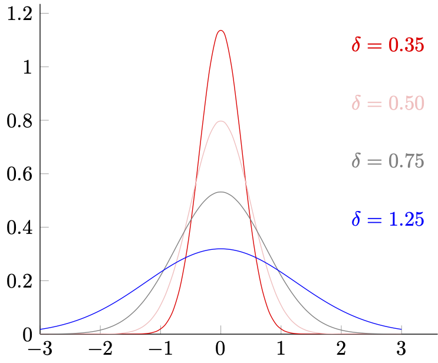
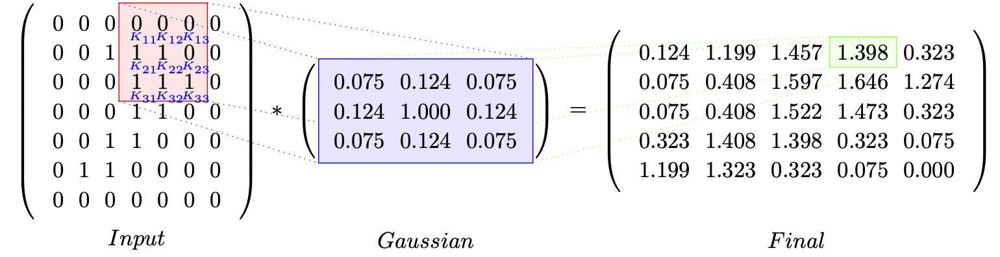

3.2.1 高斯滤波（Gauss Filter）
高斯滤波是我们最常用的一种滤波器。
想要理解高斯滤波的作用，首先需要回顾一下 高斯分布（Gaussian Distribution） ，即 正态分布（Normal Distribution） 的数学特征。高斯分布公式 ：
f(x,μ)=√2π⋅δ1e−2⋅δ2(x−μ)2
其在 x 为一维时的平面的对应分布如下：

图 3.2.1-1 一维正态分布示意图
从图像可见，高斯分布的 μ 决定了分部的中心，而 δ 决定了形变的剧烈程度。而线下曲线面积，则代表了对应区间段内的取值发生概率。从离散角度则指 x∈int[xc−2n,xc+2n] 范围内，有 x=xc 的取值概率为 f(xc) 。
记原信号为 S(x) 。以 ∣target∣1 表示归一化操作，则 ∣∑xc−n/2xc+n/2(f(x)⋅S(x))∣1 代表在当前给定 (δ,μ) 的高斯分布 f(x,μ) 下，考虑 x=xc 时左右相邻含 xc 在内共 n 个节点取值情况的 S(xc) 的概率均值。我们记 xc 为中心点，数据采样数为 T ，有：
xc∈Fn(xc)int[2n,T−2n],n∈intodds=∣∑xc−n/2xc+n/2(f(x,xc)⋅S(x))∣1
上式中，Fn(xc) 即为一维情况下的 n 步滑动窗口，也可以称为 n×1 卷积核。通过沿信号的数据顺序，滑动 Fn(xc) 求取原值 xc 替换值的操作。我们可以在一定程度上利用分布的概率关系，以调整 δ 取值的方式来影响核内相邻数据的波动性，进而影响整体波动性达到滤波目的。 取 δ 越小，波动性越强越激烈，图片越尖锐；反之 δ 越大，波动性越弱越平缓，图片越模糊。
一维信号早期常用这种手段来一定程度的进行降噪（现今已被优秀和复杂的多的算法替换了）。而二维信号，即图片，在我们之前讲解傅里叶变化时以提到过，和一维主要差别是在维度上。所以当我们记数据采样数为 (W×H) ，有将 x 换为向量 x⃗=(x,y) 表示：
xc∈Fn(xc⃗)int[2n,W−2n],yc∈int[2n,H−2n]n∈intodds=Fn(xc,yc)=∣∑yc−n/2yc+n/2∑xc−n/2xc+n/2(f(x⃗,xc⃗)⋅S(x⃗))∣1
则 Fn(xc⃗) 即为二维情况下的 n×n 高斯滤波卷积核。同理，更多维情况只需要扩展参数 x⃗ 的向量空间即可。
可是看上去，目前的公式算不上简单。但真的是这样吗？
假设 n=3 那么 3×3 高斯滤波卷积核，实际描述的是 xc⃗ 点周围单位距离内，相邻含 xc⃗ 在内共 9 个节点的波动关系，有：
Fn(xc⃗)=∣xy∑Sxy⋅f((xc,yc)−⎣⎡(−1,−1),(−1,0),(−1,1),(0,−1),(0,0),(0,1),(1,−1)(1,0)(1,1)⎦⎤)∣1=∣xy∑Sxy⋅f(xc⃗−N3×3⃗)∣1
一般情况，我们不会在单批（single batch）数据处理时，改变 δ 的取值。假设 δ 为标准正态分布取值 δ=1 ，那么 f(x⃗,μ⃗) 有：
f(x⃗,μ⃗)=√2π1e−21(x⃗−μ⃗)2
显然， f(x⃗,μ⃗) 在 δ 取固定值的情况下，只和 (x⃗−μ⃗) 的计算有关。而由于我们取 μ⃗=xc⃗ ，在 (x⃗−μ⃗) 的计算中：
∑(x⃗−μ⃗)=∑(x⃗−xc⃗)=N3×3⃗
正好消除了变化的 x⃗ 的部分，因此 Fn(xc⃗) 可以被化简为：
Fn(xc⃗)=∣xy∑Sxy⋅f(xc⃗−N3×3⃗)∣1=∣xy∑Sxy⋅f(N3×3⃗)∣1=xy∑Sxy⋅∣(√2π1e−21(Δx2+Δy2))xy∣1=xy∑Sxy⋅∣⎣⎡0.075,0.124,0.075,0.124,1.000,0.124,0.0750.1240.075⎦⎤∣1
我们只需要依次计算卷积核范围内的点，对应信号值与概率相乘之和即可，即：
Fn(xc⃗)=∣0.075⋅S(xc−1,yc−1)+0.124⋅S(xc,yc−1) +0.075⋅S(xc+1,yc−1) +0.124⋅S(xc−1,yc)+1.000⋅S(xc,yc)+0.124⋅S(xc+1,yc) +0.075⋅S(xc−1,yc−1)+0.124⋅S(xc,yc+1) +0.075⋅S(xc+1,yc+1)∣1
为了保证输入输出数据一致。根据卷积核的大小，我们还需要在数据的外围补充一圈空值，以保证感受野等大数据源。如果当前需要处理的数据为 (W×H)=(5×5) ，即总共 25 个像素的单通道灰度图。经过 n×n=3×3 大小的高斯卷积核处理后，有如下结果：

不难发现上面的 求值过大 ，这是因为我们 并没有 使用 δ=1.0 时归一化后的高斯算子：
f(N3×3⃗)=∣⎣⎡0.075,0.124,0.075,0.124,1.000,0.124,0.0750.1240.075⎦⎤∣1=⎣⎡0.042,0.069,0.042,0.069,0.557,0.069,0.0420.0690.042⎦⎤
当然，也可以直接除以 f(N3×3⃗) 矩阵的秩，即 ∣f(N3×3⃗)∣δ=1.0=1.796 ，作用在最终结果上。完成这一步后，整个高斯滤波单元才真正封装完毕。
对一张 (W×H) 的图片，单次标准高斯滤波需要经过 O(N)=((W−(n−2))×(H−(n−2))×8) 次加法运算，外加单独进行的一次 n×n 卷积核大小的 f(x⃗,μ⃗) 归一化概率计算。而通过计算 f(x⃗,μ⃗) 得到的 f(N3×3⃗) ，在 δ 发生改变前都可以无限复用。因此，算法非常快捷。
高斯滤波的简易 GLSL 渲染程序片
现在，我们可以依据理论来做 GPU 的动态管线程序片封装了。
首先，我们需要定义 顶点程序片（Vertex Shader） 。通过该程序片指定 GPU 的绘制区域，以及纹理与物体的点位映射。由于我们是对整个视窗界面进行处理，所以可以采用对传入的顶点数据进行坐标变换的方式，来求得顶点映射的纹理坐标，减少少量数据通信：
attribute vec3 position;
varying vec4 fs_position;
varying vec2 fs_texcoord;
void main()
{
fs_position = vec4(position.x, position.y, position.z, 1.0);
fs_texcoord = (position.xy + vec2(1.0, 1.0)) / 2.0;
gl_Position = fs_position;
}
没有太多操作，因为关键的部分在 像素程序片（Pixel Shader/Fragment Shader） 上：
precision mediump float;
varying vec4 fs_position;
varying vec2 fs_texcoord;
uniform vec2 pixel_bias;
uniform mat3 gaussian_matrix;
uniform sampler2D target_texture;
void main()
{
vec3 output_;
for (int i = 0; i < 3; i++) {
for (int j = 0; j < 3; j++) {
vec2 bias = vec2(i-1, j-1) * pixel_bias;
output_ += texture2D(target_texture, fs_texcoord.xy + bias).rgb * gaussian_matrix[i][j];
}
}
gl_FragColor = vec4(output_, 1.0);
}
完成对算法求和过程的迁移。传入的 高斯算子 gaussian_matrix 和 相邻像素归一化的偏移距离 pixel_bias 的操作，只需要在执行前由 CPU 计算一次即可。由于采用 Web 展示，此处方法以 JavaScript 语法实现：
function pixel_bias(width, height) {
return new Float32Array([
1.0 / width, 1.0 / height
]);
}
function calculate_gaussian_kernel(step, delta) {
let n = step * 2 + 1;
let kernel = new Float32Array(n * n);
let factor_1 = 1.0 / (Math.sqrt(2.0 * Math.PI) * delta);
let factor_2 = 1.0 / (2.0 * delta * delta);
let normalize_div = 0;
for (let i = 0; i < n; i++) {
for (let j = 0; j < n; j++) {
let diff = Math.pow(i - step, 2) + Math.pow(j - step, 2);
kernel[j + n * i] = factor_1 * Math.exp(-diff * factor_2);
normalize_div += kernel[i];
}
}
for (let i = 0; i < kernel.length; i++) {
kernel[i] /= normalize_div;
}
return kernel;
}
至此，一个简单但实用的高斯滤波器就完成了。除了上述这种使用卷积核大小一对一采样的方式外，采用单一方向的高斯滤波滑动窗口，如 v⃗n×1=(vx,vy)orient ，也是一种减少采样数量，从而提高运算效率的方式。但由于只有指定方向的颜色关系参与了运算，单一方向高斯滤波，或者说更为通用的是近乎所有单一方向的滤波器，对数据处理后的结果，都只会表现为固定方向的过滤效果。这会使画面显得有些割裂，因此建议慎重使用。
而如果要求在保证滤波效果的同时，还能精简运算。那么我们就需更为快捷且采样更少的高斯单元了。
高斯滤波的线性插值采加速
一种通用的方式，就是在采样时引入 线性插值（Linear Sampling） ，减少采样次数。我们用 W 代表高斯算子，用 Wij=w(x⃗) 代表高斯算子在 x⃗ 所处 N3×3⃗ 中位置的对应 fij(N3×3⃗) 值，用 s(x⃗) 代表 x⃗ 在图片中的像素值。则对于采样 3×3 的 N3×3⃗ 来说，由差值公式：
sdst(x1⃗,x2⃗)=wsrc(x1⃗)+wsrc(x2⃗)ssrc(x1⃗)⋅wsrc(x1⃗)+ssrc(x2⃗)⋅wsrc(x2⃗)
可知，9 次采样能够两两差值，从而减少到只需 5 次实际的纹理数据读。卷积核的采样位置，取四角记为 [C1,C2,C3,C4]=[S(xc−1,yc−1),S(xc−1,yc+1),S(xc+1,yc−1),S(xc+1,yc+1)] 和中心 C0=S(xc,yc) ，如下：
Samplexy⋅⎣⎡1,0,1,0,1,0,101⎦⎤=⎣⎡C1C3C0C2C4⎦⎤
则 Fn(xc⃗) 就可以表示为：
Fn(xc⃗)===W00⋅C1 +W01⋅C12 +W02⋅C2 +W10⋅C13+W11⋅C0 +W12⋅C24 +W20⋅C3 +W21⋅C34 +W22⋅C4W00⋅C1 +W01⋅W00+W02W00⋅C1+W02⋅C2 +W02⋅C2 +W10⋅W00+W20W00⋅C1+W20⋅C3 +W11⋅C0 +W12⋅W02+W22W02⋅C2+W22⋅C4 +W20⋅C3 +W21⋅W20+W22W20⋅C3+W22⋅C4 +W22⋅C4(W00 + W00 + W02W00⋅W01+W00 + W20W00⋅W10)⋅C1 +(W02 + W00 + W02W02⋅W01+W02 + W22W02⋅W12)⋅C2 +(W20 + W00 + W20W20⋅W10+W20 + W22W20⋅W21)⋅C3 +(W22 + W02 + W22W22⋅W12+W20 + W22W22⋅W21)⋅C4 +W11⋅C0
看上去很复杂，但取中心点的二维高斯分布，其 fij(N3×3⃗) 的值是随 xc⃗ 中心对称的，有：
W0W1W2=[W11]=[W01=W10=W12=W21]=[W00=W02=W20=W22]
带入到线性插值 Fn(xc⃗) 表达式，则：
Fn(xc⃗)=W0⋅C0+[(W1 + W2)⋅(C1 +C2 +C3 +C4 )]
当取 δ=1.0 时，三值得到固定的归一化取值 [W0,W1,W2]=[0.557, 0.069, 0.042] ，而 Fn(xc⃗) 的表达式就只和采样相关了：
Fn(xc⃗)=0.557⋅C0 + 0.111⋅(C1 +C2 +C3 +C4 )
所以，插值采样的高斯滤波非常精简。只需要略微调整像素程序片（Pixel Shader/Fragment Shader）的实现，而不需要对其他处理进行改动，就能完成改造：
precision mediump float;
varying vec4 fs_position;
varying vec2 fs_texcoord;
uniform vec2 pixel_bias;
uniform mat3 gaussian_matrix;
uniform sampler2D target_texture;
void main()
{
float gauss_factor = gaussian_matrix[0][0]+gaussian_matrix[0][1];
vec3 output_;
output_ += texture2D(target_texture, fs_texcoord.xy ).rgb * gaussian_matrix[1][1];
output_ += texture2D(target_texture, fs_texcoord.xy + vec2(-1, -1) * pixel_bias).rgb * gauss_factor;
output_ += texture2D(target_texture, fs_texcoord.xy + vec2(-1, +1) * pixel_bias).rgb * gauss_factor;
output_ += texture2D(target_texture, fs_texcoord.xy + vec2(+1, -1) * pixel_bias).rgb * gauss_factor;
output_ += texture2D(target_texture, fs_texcoord.xy + vec2(+1, +1) * pixel_bias).rgb * gauss_factor;
gl_FragColor = vec4(output_, 1.0);
}
加速后的高斯滤波单元，对一张 (W×H) 图片的处理的理论耗时，减少到了原耗时的 0.625⋅O(N) 。采样数也同比减少了 37.5% 。效果上和直算相比，几乎无差别。
高斯滤波的局限性
由于高斯滤波的通用卷积核是 各向同性（Isotropic） 的，在核范围内的各方向向量与中心点的方差，仅和向量终点与核中心点的相对距离有关。因此，高斯滤波并不是没有弊端的。
我们仍然选择 μ=xc⃗ 为核中心，假设核范围内有不包含 xc⃗ 在内的，总计为 N 的 n 维向量 x⃗=(x1,x2, ... ,xn)∈Rn 的采样数据 SN={Sx1⃗,Sx2⃗, ... ,SxN⃗} 。将高斯滤波卷积核的离散程度，以非概率密度 协方差矩阵（Covariance Matrix） 的 Mcov(x⃗) 形式表示，记 I 为单位对角矩阵，有：
Mcov(x⃗)=N1i=1∑NSxi⃗⋅⎣⎢⎢⎡(x1−xc1)2(x2−xc2)2...(xn−xcn)2⎦⎥⎥⎤=∑Δx2⋅I∈Rn×n
多维高斯的协方差矩阵，只有对角线的 方差（Variance）存在非 0 取值 ，而衡量参数交叠影响的 协方差（Covariance）皆为 0 值 。所以，高斯滤波没有考虑维度方位信息带来的数据间的差异，每一个维度仅对自身属性产生影响。因此，高斯核总是中心对称 。
这一特征体现在二维信号的处理上时，就表现为经过高斯滤波处理的图片，轮廓细节会有所丢失（物体更不容易分辨，而非单纯颜色变得规整）。同时，也更容易因为算法导致的频率扰动，产生高频变化规律缺失，像素朝核的外边缘等量的分散运动而出现摩尔纹（Moire Pattern） 。毕竟图片的高频部分，才是保存轮廓信息的关键。但高斯滤波本质上却是全通量的概率权重控制。
那么有没有能够在一定程度上，既保留高频细节的同时，又能够相对独立的处理低频波动的算法呢？
考虑问题主要出现在高斯滤波的各向同性，或许可以通过引入高低频差异修饰滤波器，来达成要求。这种做法被称为 边缘保存（Edge Preserving） 。